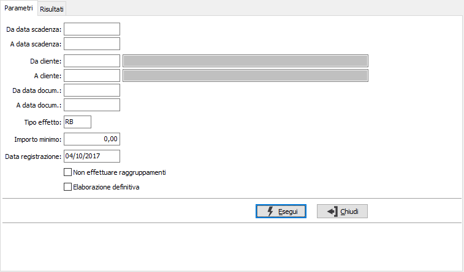
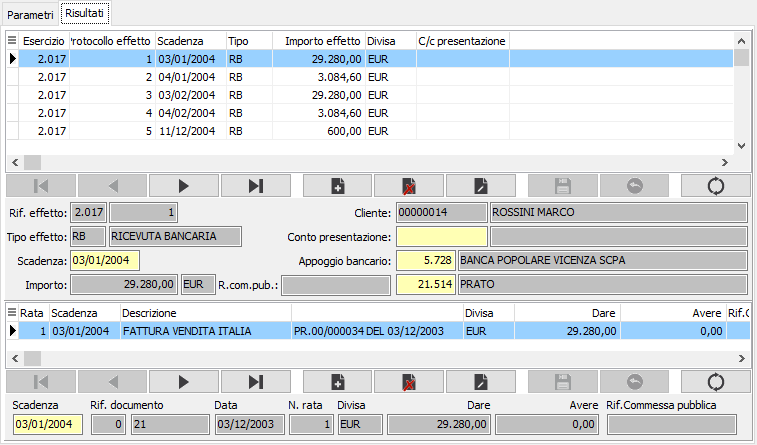

Generazione effetti
Il programma esamina le scadenze delle fatture di vendita contenute nella tabella Movimenti scadenze, individua quelle con modalità di pagamento RB (ricevuta bancaria) e TR (tratta autorizzata) e provvede a generare i relativi effetti, completando i campi adeguati nella tabella Movimenti scadenze.
Se l’anagrafica di un cliente prevede il raggruppamento degli effetti e non viene spuntata la casella "Non effettuare raggruppamenti", se al momento della generazione effetti esistono più fatture dello stesso cliente, purché con identiche date di scadenza, divisa, ecc, viene generato un solo effetto che raggruppa più fatture. Per i clienti con gestione del raggruppamento effetti sarà comunque possibile, in fase di elaborazione distinta, effettuare il raggruppamento manualmente degli effetti desiderati.
Nel caso non sia configurata la generazione interattiva è opportuno, prima di procedere alla generazione degli effetti, intervenire tramite il programma Manutenzione scadenze del menù Partite aperte clienti, nel caso in cui si vogliano modificare date di scadenza o importi degli effetti: dopo la generazione degli effetti, simili interventi possono essere effettuati solo sugli effetti assegnati ad una distinta, prima della sua contabilizzazione, tramite il programma Manutenzione distinta del menù Effetti attivi.
La generazione “definitiva” degli effetti provvede a “segnare” le scadenze trattate, allo scopo di impedire in futuro ulteriori generazioni di effetti da parte delle scadenze già trattate. Provvede inoltre ad attivare la generazione delle scritture contabili di accredito del conto effetti attivi e di addebito del conto clienti, se questa modalità è definita in configurazione partite aperte.
L’esecuzione del programma, sia in modalità “di prova” che in modalità definitiva, consente di modificare, nel caso sia configurata la gestione interattiva, direttamente le scadenze dalla pagina Risultati; tramite i pulsanti di Stampa e Anteprima posti sulla toolbar principale è possibile stampare un tabulato di controllo che elenca gli effetti trattati dall'elaborazione. L’esame di questo tabulato può consentire l’individuazione di eventuali rettifiche che possono ancora essere apportate, prima della generazione definitiva, come già accennato, tramite il programma Manutenzione scadenze del menù Partite aperte clienti.
Giova ancora ricordare che gli effetti generati possono già contenere l‘indicazione della banca di presentazione, nel caso in cui tale informazione sia presente in anagrafica clienti oppure sia stata inserita dall’utente all’atto della registrazione contabile di una fattura attiva.
La finestra è suddivisa in due pagina, una relativa alla richiesta parametri e l'altra relativa ai risultati dell'elaborazione.

DA DATA SCADENZA: inserire la data scadenza da cui si intende iniziare la selezione delle scadenze. Confermando a vuoto l’analisi e la generazione iniziano dalla prima scadenza valida all'interno della tabella.
A DATA SCADENZA: inserire la data scadenza a cui si intende terminare la selezione delle scadenze. Confermando a vuoto la stampa termina con l'ultima scadenza valida.
DA CLIENTE: indicare il codice del cliente da cui si vuole iniziare la selezione delle scadenze per la generazione degli effetti. Confermando a vuoto, l’analisi inizia con il primo cliente valido. Sul campo sono attive le funzioni di ricerca (F9).
A CLIENTE: indicare il codice del cliente con cui si vuole terminare la selezione delle scadenze per la generazione degli effetti. Confermando a vuoto, l’analisi termina con l’ultimo cliente valido. Sul campo sono attive le funzioni di ricerca (F9).
DA DATA DOCUMENTO: inserire la data relativa al documento da cui si intende iniziare la selezione delle scadenze. Confermando a vuoto l’analisi e la generazione iniziano dalla prima data documento valida all'interno della tabella.
A DATA DOCUMENTO: inserire la data relativa al documento con cui si intende terminare la selezione delle scadenze. Confermando a vuoto la stampa termina con l'ultima data documento valida.
TIPO EFFETTO: inserire il tipo di effetto per cui si vuole effettuare la generazione. Valori consentiti:
RB = Ricevuta Bancaria
TR = Tratta
CE = Cessione
In caso di conferma a vuoto su questo campo vengono selezionate tutte le scadenze.
IMPORTO MINIMO: indicare, se lo si ritiene opportuno, l'importo minimo degli effetti che devono essere generati. Ciò comporterà la mancata generazione di effetti il cui importo sarebbe inferiore all’importo minimo indicato.
DATA REGISTRAZIONE: è la data di registrazione del movimento di saldo cliente e accredito del portafoglio in contabilità. Viene presentata la data di sistema, che può essere modificata dall’utente. La data è significativa solo se in configurazione partite aperte è prevista la contabilizzazione portafoglio contestuale alla generazione effetti.
NON EFFETTUARE RAGGRUPPAMENTI: se spuntata impone alla procedura di non effettuare mai in nessun caso il raggruppamento degli effetti anche se l'anagrafica del cliente lo prevede e ci fossero le condizioni; se lasciata vuota la procedura effettuerà il raggruppamento effetti normalmente.
ELABORAZIONE DEFINITIVA: check box; l’assenza della spunta consente di effettuare una generazione simulata, la presenta della spunta determina invece la generazione definitiva.
La pagina Risultati contiene le informazioni relative agli effetti che si andranno a generare; la sezione superiore riporta i dati degli effetti e per ogni effetto la sezione inferiore riporta le scadenze a cui questo è collegato. In questa fase, se configurata la generazione interattiva, è consentito modificare la scadenza, il conto di presentazione e l'appoggio bancario; tramite gli appositi tasti della toolbar è possibile effettuare la stampa di un report che riporta tutti i dati relativi alla generazione che si sta eseguendo, sia questa di prova, che definitiva. Nel caso siano stati modificati alcuni dati viene comunque richiesto se si desidera salvare quelli relativi alle scadenze.

La pressione del tasto Salva sulla toolbar principale, in caso di elaborazione definitiva, previa richiesta di conferma, effettua la generazione definitiva. Al termine della generazione viene data comunque l'informazione del corretto o errato esito dell'operazione.